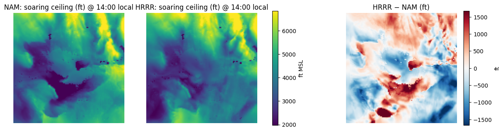
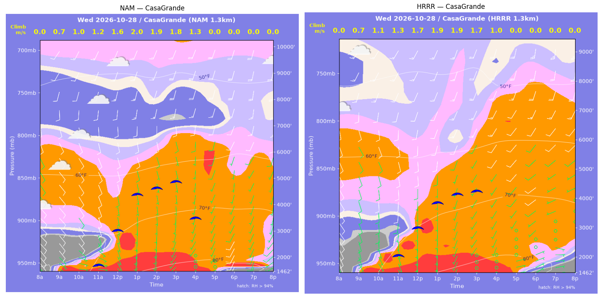
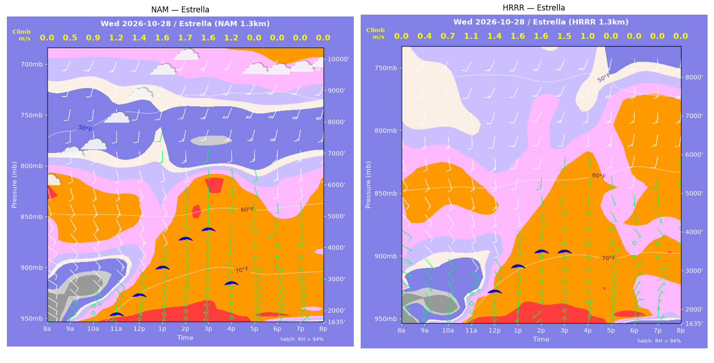
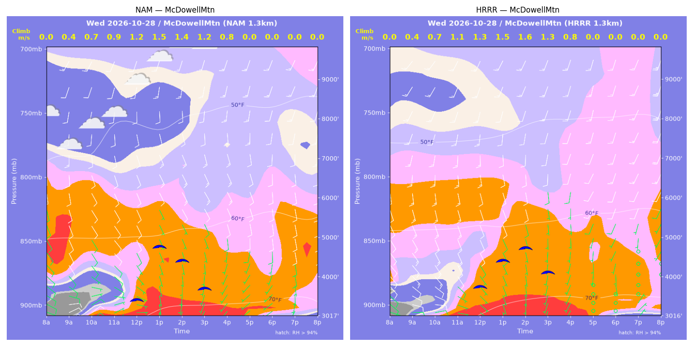
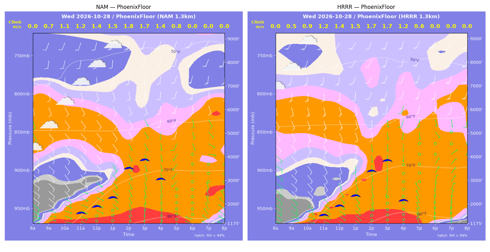
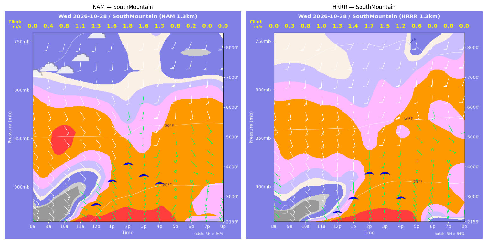
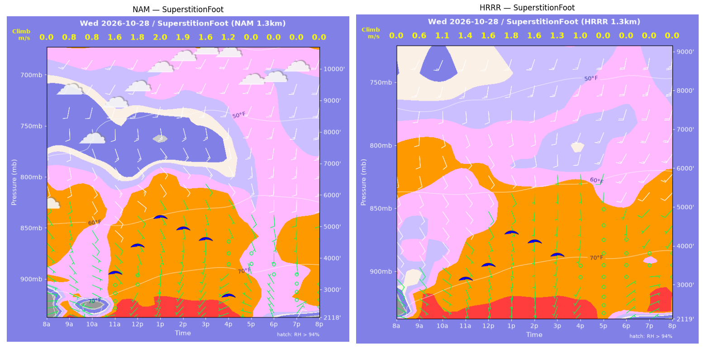
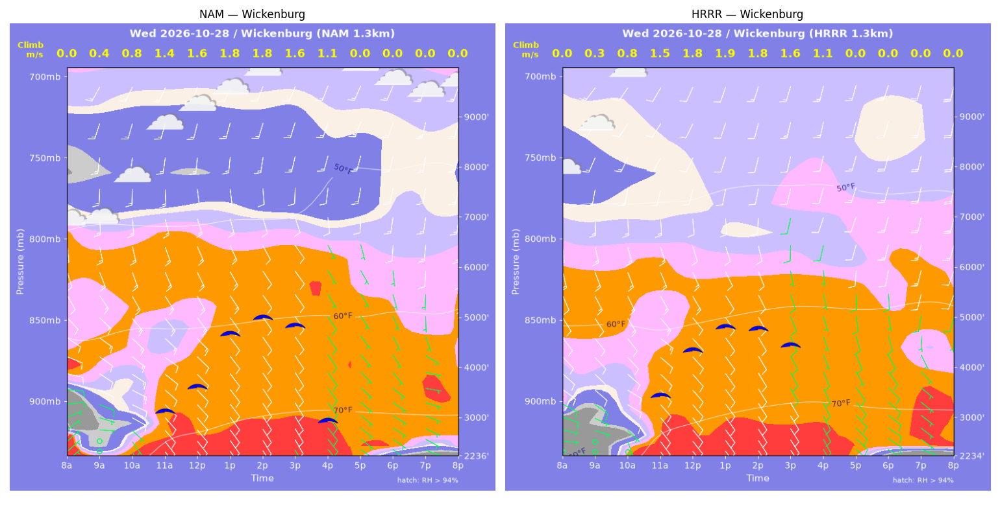

../runs/ab-phoenix-nam — model nam, cycle 2026-10-27 18z, dx 1.3333333740234374 km, 13 hours, grid 114×114../runs/ab-phoenix-hrrr — model hrrr, cycle 2026-10-27 18z, dx 1.3333333740234374 km, 13 hours, grid 114×114Grids identical; afternoon = 12:00–17:59 local (UTC-7). Δ = HRRR − NAM.
| Site | terrain ft | BL top (AGL) med|Δ| / bias (ft) | w* med|Δ| / bias (fpm) | Soaring ceiling med|Δ| / bias (ft) | BL wind speed med|Δ| / bias (kt) | BL wind dir med|Δ| / bias (deg) | 2 m temperature med|Δ| / bias (F) | Sfc LCL (AGL) med|Δ| / bias (ft) | Sensible heat flux med|Δ| / bias (W/m2) |
|---|---|---|---|---|---|---|---|---|---|
| PhoenixFloor | 1175 | 137 / -195 | 14 / -17 | 62 / -149 | 2 / -1 | 36 / +37 | 1 / +1 | 2475 / +2474 | 11 / -9 |
| SouthMountain | 2160 | 428 / -444 | 25 / -24 | 294 / -264 | 2 / -0 | 27 / +45 | 1 / +1 | 2255 / +2188 | 16 / -4 |
| SuperstitionFoot | 2119 | 671 / -538 | 50 / -41 | 813 / -687 | 3 / -1 | 31 / +18 | 0 / +0 | 2293 / +2460 | 25 / -28 |
| Estrella | 1635 | 941 / -652 | 16 / -15 | 517 / -560 | 2 / -2 | 16 / +0 | 0 / +0 | 2095 / +1974 | 5 / +6 |
| Wickenburg | 2236 | 610 / -250 | 6 / +14 | 308 / -81 | 2 / -1 | 10 / +11 | 1 / +1 | 2107 / +2130 | 28 / +23 |
| CasaGrande | 1462 | 708 / -640 | 12 / -12 | 491 / -598 | 1 / +0 | 29 / -4 | 1 / +0 | 1665 / +1777 | 9 / +8 |
| McDowellMtn | 3017 | 289 / +32 | 12 / +14 | 312 / +111 | 3 / -2 | 5 / +9 | 1 / +1 | 2762 / +2636 | 23 / +23 |
| Metric | n | median |Δ| | p90 |Δ| | bias |
|---|---|---|---|---|
| BL top (AGL) (ft) | 42 | 463 | 1127 | -384 |
| w* (fpm) | 42 | 17 | 48 | -12 |
| Soaring ceiling (ft) | 42 | 324 | 880 | -318 |
| BL wind speed (kt) | 42 | 2 | 3 | -1 |
| BL wind dir (deg) | 42 | 20 | 43 | +17 |
| 2 m temperature (F) | 42 | 1 | 1 | +1 |
| Sfc LCL (AGL) (ft) | 42 | 2217 | 2830 | +2234 |
| Sensible heat flux (W/m2) | 42 | 13 | 40 | +3 |
diffmap_tol.png| local | BL top NAM/HRRR ft | w* NAM/HRRR fpm | ceiling NAM/HRRR ft | BL wind NAM/HRRR | T2 NAM/HRRR F | HFX NAM/HRRR |
|---|---|---|---|---|---|---|
| 08:00 | 0 / 0 | 0 / 0 | 1175 / 1175 | 3kt@056 / 5kt@110 | 62 / 61 | 0 / 0 |
| 09:00 | 786 / 383 | 143 / 108 | 1175 / 1175 | 9kt@123 / 7kt@106 | 67 / 66 | 57 / 50 |
| 10:00 | 1227 / 784 | 211 / 176 | 1175 / 1175 | 10kt@136 / 9kt@134 | 70 / 70 | 118 / 108 |
| 11:00 | 1485 / 1337 | 244 / 240 | 1680 / 1599 | 7kt@107 / 10kt@147 | 73 / 74 | 153 / 162 |
| 12:00 | 1748 / 1761 | 269 / 275 | 1938 / 1976 | 7kt@123 / 7kt@162 | 77 / 77 | 174 / 186 |
| 13:00 | 2222 / 2334 | 295 / 302 | 2293 / 2381 | 9kt@147 / 8kt@180 | 79 / 80 | 183 / 186 |
| 14:00 | 3930 / 3820 | 353 / 342 | 3507 / 3391 | 9kt@150 / 11kt@175 | 82 / 82 | 177 / 166 |
| 15:00 | 4589 / 4750 | 342 / 325 | 3838 / 3814 | 8kt@148 / 10kt@192 | 83 / 84 | 139 / 115 |
| 16:00 | 4125 / 3691 | 273 / 233 | 3025 / 2143 | 9kt@188 / 6kt@191 | 83 / 84 | 78 / 54 |
| 17:00 | 3222 / 2313 | 155 / 110 | 1175 / 1175 | 8kt@200 / 1kt@277 | 83 / 83 | 18 / 9 |
| 18:00 | 829 / 901 | 0 / 0 | 1175 / 1175 | 2kt@305 / 6kt@352 | 82 / 81 | -0 / -6 |
| 19:00 | 307 / 438 | 0 / 0 | 1175 / 1175 | 3kt@318 / 7kt@354 | 80 / 79 | -1 / -6 |
| 20:00 | 315 / 364 | 0 / 0 | 1175 / 1175 | 6kt@304 / 8kt@358 | 78 / 77 | -5 / -9 |
| local | BL top NAM/HRRR ft | w* NAM/HRRR fpm | ceiling NAM/HRRR ft | BL wind NAM/HRRR | T2 NAM/HRRR F | HFX NAM/HRRR |
|---|---|---|---|---|---|---|
| 08:00 | 0 / 0 | 0 / 0 | 2160 / 2160 | 7kt@122 / 7kt@139 | 61 / 64 | 0 / 0 |
| 09:00 | 121 / 109 | 76 / 56 | 2160 / 2160 | 12kt@136 / 10kt@137 | 66 / 69 | 56 / 25 |
| 10:00 | 452 / 449 | 160 / 152 | 2160 / 2160 | 11kt@126 / 10kt@137 | 67 / 69 | 140 / 121 |
| 11:00 | 1073 / 701 | 220 / 205 | 2160 / 2160 | 9kt@125 / 10kt@148 | 70 / 71 | 153 / 191 |
| 12:00 | 1555 / 1095 | 262 / 246 | 2804 / 2543 | 10kt@143 / 9kt@171 | 73 / 73 | 180 / 213 |
| 13:00 | 2580 / 1755 | 321 / 285 | 3577 / 3003 | 9kt@150 / 10kt@183 | 76 / 76 | 200 / 207 |
| 14:00 | 3319 / 2922 | 354 / 330 | 4133 / 3806 | 8kt@157 / 9kt@183 | 77 / 78 | 210 / 193 |
| 15:00 | 2945 / 3163 | 312 / 303 | 3735 / 3798 | 7kt@180 / 10kt@203 | 77 / 79 | 162 / 138 |
| 16:00 | 3161 / 2852 | 261 / 236 | 3459 / 2976 | 12kt@202 / 9kt@192 | 78 / 79 | 88 / 72 |
| 17:00 | 2376 / 1488 | 158 / 121 | 2160 / 2160 | 5kt@166 / 2kt@337 | 77 / 78 | 26 / 19 |
| 18:00 | 237 / 463 | 38 / 0 | 2160 / 2160 | 3kt@340 / 7kt@324 | 76 / 75 | 4 / -2 |
| 19:00 | 430 / 544 | 0 / 0 | 2160 / 2160 | 4kt@341 / 8kt@354 | 75 / 73 | -0 / -1 |
| 20:00 | 332 / 659 | 0 / 0 | 2160 / 2160 | 5kt@336 / 9kt@005 | 74 / 72 | -1 / -2 |
| local | BL top NAM/HRRR ft | w* NAM/HRRR fpm | ceiling NAM/HRRR ft | BL wind NAM/HRRR | T2 NAM/HRRR F | HFX NAM/HRRR |
|---|---|---|---|---|---|---|
| 08:00 | 0 / 0 | 0 / 0 | 2119 / 2120 | 7kt@069 / 6kt@102 | 60 / 67 | 0 / 0 |
| 09:00 | 1241 / 1048 | 150 / 118 | 2119 / 2120 | 6kt@126 / 8kt@141 | 75 / 74 | 42 / 23 |
| 10:00 | 480 / 1695 | 158 / 212 | 2119 / 2120 | 2kt@205 / 10kt@137 | 72 / 76 | 127 / 86 |
| 11:00 | 2790 / 2393 | 306 / 276 | 3583 / 3215 | 9kt@135 / 9kt@135 | 76 / 77 | 161 / 136 |
| 12:00 | 3839 / 2747 | 358 / 306 | 4421 / 3558 | 10kt@132 / 9kt@150 | 78 / 78 | 188 / 161 |
| 13:00 | 5030 / 3846 | 393 / 345 | 5308 / 4362 | 12kt@143 / 10kt@153 | 79 / 79 | 189 / 165 |
| 14:00 | 4612 / 3842 | 369 / 306 | 4937 / 4133 | 12kt@142 / 9kt@172 | 80 / 80 | 171 / 116 |
| 15:00 | 4494 / 3922 | 322 / 264 | 4596 / 3775 | 8kt@146 / 7kt@178 | 80 / 80 | 117 / 73 |
| 16:00 | 3622 / 4054 | 227 / 200 | 2806 / 2120 | 7kt@147 / 11kt@195 | 80 / 80 | 50 / 30 |
| 17:00 | 688 / 649 | 0 / 0 | 2119 / 2120 | 5kt@306 / 1kt@274 | 76 / 77 | -2 / -0 |
| 18:00 | 509 / 85 | 0 / 0 | 2119 / 2120 | 6kt@324 / 5kt@052 | 71 / 72 | -5 / -3 |
| 19:00 | 272 / 293 | 0 / 0 | 2119 / 2120 | 4kt@039 / 4kt@062 | 71 / 72 | -11 / -4 |
| 20:00 | 85 / 85 | 0 / 0 | 2119 / 2120 | 6kt@045 / 6kt@039 | 70 / 71 | -5 / -6 |
| local | BL top NAM/HRRR ft | w* NAM/HRRR fpm | ceiling NAM/HRRR ft | BL wind NAM/HRRR | T2 NAM/HRRR F | HFX NAM/HRRR |
|---|---|---|---|---|---|---|
| 08:00 | 0 / 0 | 0 / 0 | 1635 / 1635 | 7kt@121 / 2kt@146 | 59 / 64 | 0 / 0 |
| 09:00 | 361 / 284 | 90 / 82 | 1635 / 1635 | 3kt@159 / 2kt@157 | 68 / 70 | 31 / 29 |
| 10:00 | 943 / 485 | 175 / 146 | 1635 / 1635 | 7kt@129 / 4kt@129 | 70 / 69 | 86 / 98 |
| 11:00 | 1434 / 1148 | 228 / 219 | 1940 / 1635 | 8kt@134 / 5kt@117 | 74 / 73 | 127 / 141 |
| 12:00 | 2038 / 1942 | 271 / 274 | 2541 / 2513 | 9kt@144 / 10kt@164 | 76 / 76 | 152 / 165 |
| 13:00 | 3195 / 2798 | 320 / 314 | 3389 / 3139 | 11kt@154 / 10kt@173 | 78 / 79 | 160 / 173 |
| 14:00 | 4571 / 3440 | 343 / 317 | 4290 / 3506 | 9kt@169 / 7kt@174 | 80 / 80 | 137 / 146 |
| 15:00 | 5313 / 3832 | 323 / 288 | 4571 / 3500 | 10kt@191 / 5kt@167 | 81 / 81 | 99 / 98 |
| 16:00 | 4622 / 3065 | 233 / 207 | 2866 / 1635 | 7kt@173 / 4kt@161 | 80 / 81 | 42 / 45 |
| 17:00 | 815 / 1567 | 0 / 0 | 1635 / 1635 | 6kt@034 / 3kt@026 | 78 / 78 | -1 / -2 |
| 18:00 | 855 / 703 | 0 / 0 | 1635 / 1635 | 6kt@031 / 7kt@028 | 74 / 73 | -4 / -6 |
| 19:00 | 569 / 489 | 0 / 0 | 1635 / 1635 | 5kt@022 / 6kt@033 | 73 / 72 | -3 / -6 |
| 20:00 | 459 / 530 | 0 / 0 | 1635 / 1635 | 5kt@036 / 7kt@043 | 72 / 71 | -3 / -8 |
| local | BL top NAM/HRRR ft | w* NAM/HRRR fpm | ceiling NAM/HRRR ft | BL wind NAM/HRRR | T2 NAM/HRRR F | HFX NAM/HRRR |
|---|---|---|---|---|---|---|
| 08:00 | 0 / 0 | 0 / 0 | 2236 / 2235 | 7kt@049 / 2kt@288 | 59 / 55 | 0 / 0 |
| 09:00 | 316 / 95 | 80 / 64 | 2236 / 2235 | 2kt@046 / 1kt@310 | 66 / 63 | 23 / 41 |
| 10:00 | 817 / 638 | 160 / 150 | 2236 / 2235 | 10kt@119 / 7kt@135 | 70 / 69 | 74 / 80 |
| 11:00 | 2223 / 2552 | 266 / 292 | 3187 / 3499 | 14kt@132 / 13kt@130 | 74 / 75 | 126 / 150 |
| 12:00 | 2725 / 3597 | 307 / 358 | 3668 / 4390 | 14kt@142 / 13kt@155 | 75 / 76 | 159 / 197 |
| 13:00 | 4138 / 4188 | 354 / 379 | 4698 / 4837 | 13kt@154 / 11kt@162 | 76 / 77 | 161 / 201 |
| 14:00 | 4698 / 4233 | 351 / 361 | 5014 / 4783 | 11kt@163 / 9kt@166 | 77 / 78 | 138 / 172 |
| 15:00 | 4868 / 4128 | 312 / 313 | 4837 / 4452 | 9kt@161 / 7kt@180 | 77 / 78 | 92 / 115 |
| 16:00 | 4578 / 3982 | 225 / 222 | 2963 / 2235 | 9kt@173 / 7kt@178 | 76 / 77 | 35 / 42 |
| 17:00 | 3286 / 2664 | 0 / 0 | 2236 / 2235 | 6kt@152 / 8kt@173 | 74 / 73 | -3 / -5 |
| 18:00 | 471 / 592 | 0 / 0 | 2236 / 2235 | 6kt@128 / 8kt@124 | 70 / 68 | -3 / -8 |
| 19:00 | 84 / 84 | 0 / 0 | 2236 / 2235 | 6kt@090 / 9kt@086 | 68 / 67 | -4 / -12 |
| 20:00 | 84 / 260 | 0 / 0 | 2236 / 2235 | 7kt@086 / 6kt@120 | 67 / 66 | -6 / -10 |
| local | BL top NAM/HRRR ft | w* NAM/HRRR fpm | ceiling NAM/HRRR ft | BL wind NAM/HRRR | T2 NAM/HRRR F | HFX NAM/HRRR |
|---|---|---|---|---|---|---|
| 08:00 | 0 / 0 | 0 / 0 | 1462 / 1462 | 4kt@122 / 3kt@129 | 56 / 57 | 0 / 0 |
| 09:00 | 567 / 528 | 141 / 135 | 1462 / 1462 | 8kt@136 / 8kt@161 | 64 / 67 | 75 / 72 |
| 10:00 | 812 / 1006 | 192 / 208 | 1462 / 1462 | 9kt@131 / 7kt@177 | 69 / 72 | 135 / 138 |
| 11:00 | 1136 / 1567 | 231 / 262 | 1742 / 2109 | 7kt@153 / 9kt@187 | 74 / 76 | 169 / 179 |
| 12:00 | 2855 / 2745 | 323 / 335 | 3039 / 3026 | 9kt@170 / 9kt@181 | 79 / 80 | 185 / 215 |
| 13:00 | 4617 / 3869 | 388 / 375 | 4368 / 3850 | 11kt@170 / 9kt@187 | 82 / 82 | 199 / 215 |
| 14:00 | 5056 / 4388 | 377 / 366 | 4596 / 4132 | 11kt@167 / 12kt@203 | 83 / 83 | 168 / 178 |
| 15:00 | 5748 / 4908 | 346 / 328 | 4820 / 4209 | 11kt@176 / 13kt@204 | 84 / 84 | 113 / 114 |
| 16:00 | 5495 / 3707 | 248 / 204 | 3443 / 1462 | 11kt@187 / 9kt@215 | 84 / 85 | 44 / 36 |
| 17:00 | 367 / 684 | 0 / 0 | 1462 / 1462 | 2kt@218 / 2kt@076 | 81 / 80 | -0 / -1 |
| 18:00 | 730 / 287 | 0 / 0 | 1462 / 1462 | 10kt@208 / 5kt@067 | 75 / 74 | -13 / -5 |
| 19:00 | 383 / 274 | 0 / 0 | 1462 / 1462 | 8kt@198 / 8kt@080 | 73 / 71 | -8 / -8 |
| 20:00 | 85 / 84 | 0 / 0 | 1462 / 1462 | 4kt@224 / 4kt@063 | 70 / 69 | -3 / -3 |
| local | BL top NAM/HRRR ft | w* NAM/HRRR fpm | ceiling NAM/HRRR ft | BL wind NAM/HRRR | T2 NAM/HRRR F | HFX NAM/HRRR |
|---|---|---|---|---|---|---|
| 08:00 | 0 / 0 | 0 / 0 | 3017 / 3016 | 6kt@102 / 5kt@073 | 60 / 61 | 0 / 0 |
| 09:00 | 216 / 256 | 74 / 73 | 3017 / 3016 | 7kt@059 / 6kt@087 | 63 / 66 | 25 / 23 |
| 10:00 | 550 / 554 | 136 / 145 | 3017 / 3016 | 6kt@074 / 9kt@115 | 66 / 67 | 65 / 83 |
| 11:00 | 822 / 1206 | 173 / 211 | 3017 / 3016 | 7kt@118 / 13kt@153 | 68 / 70 | 92 / 118 |
| 12:00 | 1819 / 1913 | 232 / 261 | 3484 / 3804 | 8kt@151 / 12kt@157 | 71 / 72 | 100 / 142 |
| 13:00 | 3578 / 2767 | 294 / 302 | 4805 / 4447 | 13kt@156 / 11kt@160 | 73 / 74 | 103 / 153 |
| 14:00 | 3128 / 3288 | 276 / 308 | 4448 / 4752 | 12kt@151 / 10kt@170 | 73 / 74 | 98 / 136 |
| 15:00 | 2694 / 3137 | 233 / 248 | 3737 / 4138 | 11kt@153 / 9kt@173 | 73 / 74 | 67 / 74 |
| 16:00 | 1977 / 2394 | 157 / 155 | 3017 / 3016 | 9kt@175 / 6kt@176 | 73 / 74 | 26 / 23 |
| 17:00 | 772 / 662 | 0 / 0 | 3017 / 3016 | 6kt@225 / 2kt@228 | 71 / 71 | -2 / -1 |
| 18:00 | 1001 / 84 | 0 / 0 | 3017 / 3016 | 6kt@199 / 2kt@329 | 69 / 69 | -1 / -0 |
| 19:00 | 326 / 84 | 0 / 0 | 3017 / 3016 | 4kt@191 / 4kt@026 | 69 / 67 | -1 / -2 |
| 20:00 | 277 / 490 | 0 / 0 | 3017 / 3016 | 4kt@086 / 5kt@057 | 66 / 66 | -2 / -4 |
montage_PhoenixFloor.pngmontage_SouthMountain.pngmontage_SuperstitionFoot.pngmontage_Estrella.pngmontage_Wickenburg.pngmontage_CasaGrande.pngmontage_McDowellMtn.png